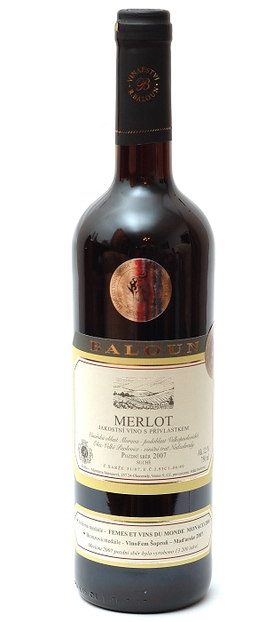
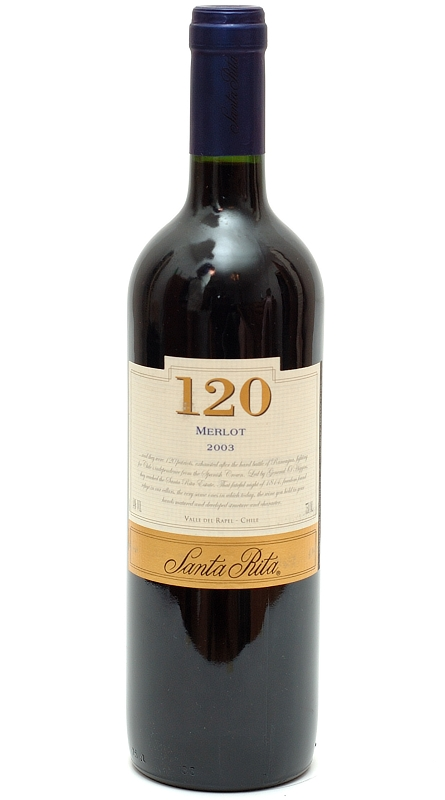
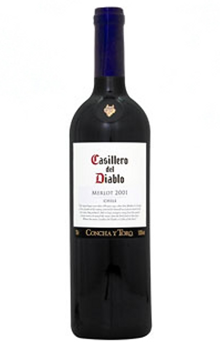
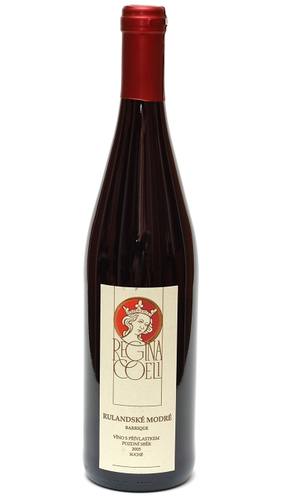
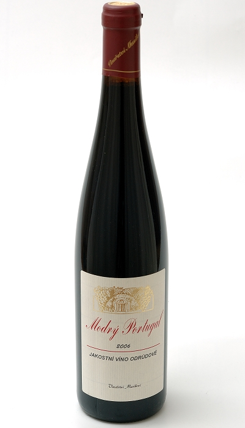
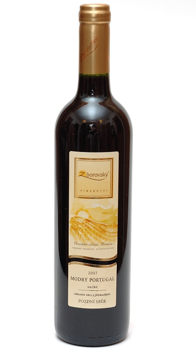

Stranka: | 1 | 2 |
| Merlot pozdní sběr ročník 2007 | |||
| Výrobce | Baloun |  | |
| Dostupnost | Skladem | ||
| Oblast | Velkopavlovická | ||
| Objem | 0,75 l | 199,- Kč/Ks | |
| Obsah cukru | suché | Koupit | |
| Obsah alko. | 12 % | ||
| Charakteristika: | |||
| Sytě červená barva s tmavě oranžovými odlesky. Opulentní vůně přezrálých malin. Chuť připomíná višňovou šťávu projevující taktéž dřevěné tóny, které dávají tušit hořkou čokoládu. | |||
| Merlot Reservado ročník 2003 | |||
| Výrobce | Santa Rita (Chile) |  | |
| Dostupnost | Na objednávku | ||
| Oblast | Colchagua Valley | ||
| Objem | 0,75 l | 325,- Kč/Ks | |
| Obsah cukru | polosuché | Koupit | |
| Obsah alko. | 14,5 % | ||
| Charakteristika: | |||
| Víno s velmi výraznou vůní připomínající maliny. Chuť plná velmi strukturovaná hedvábná s dlouhou duchutí. Toto víno je dobré před podáváním nechat prodýchat v dekantační nádobě alespoň 20 minut. | |||
| Merlot ročník 2006 | |||
| Výrobce | Concha y Toro |  | |
| Dostupnost | Obvykle skladem | ||
| Oblast | Chile | ||
| Objem | 0,75 l | 299,- Kč/Ks | |
| Obsah cukru | suché | Koupit | |
| Obsah alko. | 13 % | ||
| Charakteristika: | |||
| Merlot má temnou rubínovou barvu s čistou, svěží a atraktivní vůní zralých švestek, třešní, rybízu a ostružin, s nádechem koření. V ústech působí hutně, plně a vyváženě. | |||
| Rulandské modré pozdní sběr ročník 2005 | |||
| Výrobce | Tepělka Oulehla |  | |
| Dostupnost | Obvykle skladem | ||
| Oblast | Znojemská | ||
| Objem | 0,75 l | 225,- Kč/Ks | |
| Obsah cukru | suché | Koupit | |
| Obsah alko. | 13 % | ||
| Charakteristika: | |||
| Víno s jasně rubínovou barvou. Ve vůni čitelné tony drobného zahradního ovoce s převahou černých třešní. Chut typicky odrůdová. Intenzivní víno jižního charakteru, vhodné pro delší archivaci. | |||
| Modrý Portugal jakostní ročník 2007 | |||
| Výrobce | Musil |  | |
| Dostupnost | Obvykle skladem | ||
| Oblast | Znojemská | ||
| Objem | 0,75 l | 95,- Kč/Ks | |
| Obsah cukru | suché | Koupit | |
| Obsah alko. | 13,1 % | ||
| Charakteristika: | |||
| Víno má jiskrnou granátovou barvu. Ve vůni je cítit výrazné stopy červeného lesního ovoce a také hořké čokolády. Chuť je harmonická kulatá a plná s velkým extraktem. Jsou dobře cítit višně a čokoláda. | |||
| Modrý Portugal pozdní sběr ročník 2007 | |||
| Výrobce | Zborovský |  | |
| Dostupnost | Skladem | ||
| Oblast | Velkopavlovická | ||
| Objem | 0,75 l | 189,- Kč/Ks | |
| Obsah cukru | suché | Koupit | |
| Obsah alko. | 13 % | ||
| Charakteristika: | |||
| Toto víno připomíná ve vůni vyzrálé maliny. V chuti vystupují do popředí tóny čokolády a sušeného ovoce s jemnou tříslovinkou. Barva vína je intenzivní rubínová. Zrálo v sudu. | |||
Stranka: | 1 | 2 |